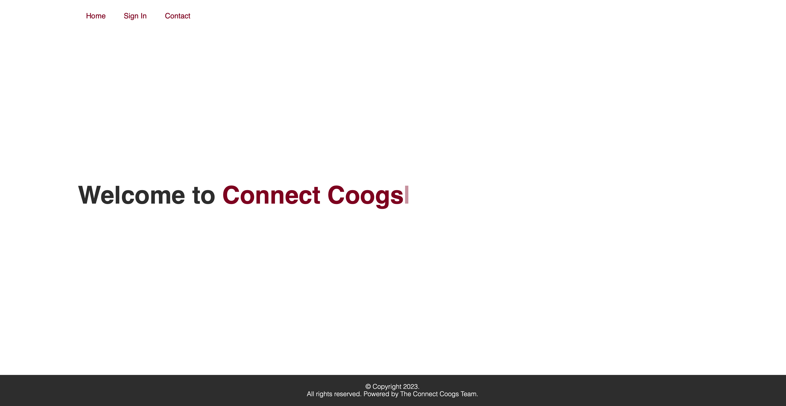
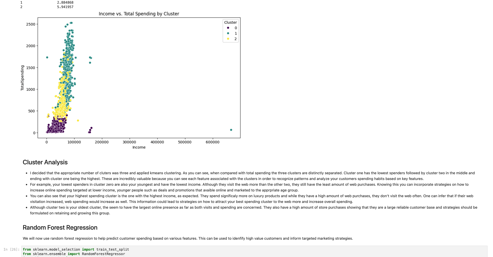
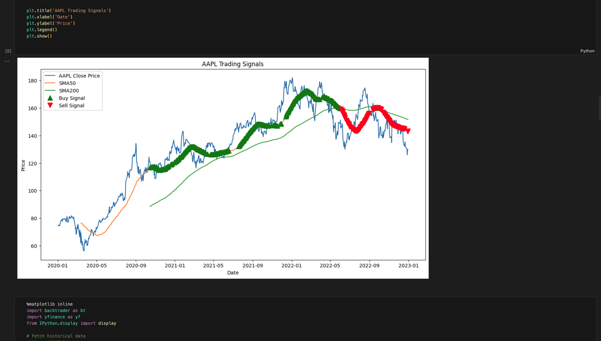
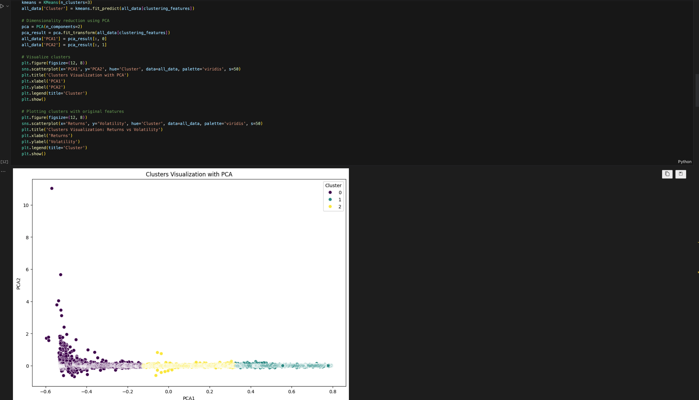

About Me
I am a senior at the University of Houston completing a degree in Computer Science with a minor in Mathematics. Along with developing technical skills in my coursework, I am constantly working on numerous coding projects demonstrating proficiency in software engineering and data science. I am constantly looking for new ways to grow my knowledge and gain exposure to the tech industry. On top of my education, I am very active in extracurricular activities having held multiple executive positions for school organizations. This has taught me incredibly valuable interpersonal skills that I am eager to combine with my technical knowledge and make a real contribution to the world of tech.
Skills & Interests
My main interest and skill is computer programming. I often spend time coding for either classwork or mini projects like this. My main interests within the realm of the tech industry are data analytics and the ever-increasing use of AI and how it impacts our lives. My strongest area of computer science is data science and machine learning. I am proficient in several python libraries and frameworks and constantly sharpen my skills with numerous projects by analyzing and creating meaningful insight on interesting datasets as well as creating models to help predict and understand data trends. If you would like to take a look at my resume you can click the button below.
Favorite Hobbies
One of my favorite hobbies is keeping up with the sport of football. It is often how I spend leisure time with my friends and my favorite team is the Dallas Cowboys. I also dedicate lots of my time to health and fitness and I occasionally play the guitar as well.
Projects
ConnectCoogs
Designed and developed connectcoogs.com, a full stack video chat platform designed and intended solely for University of Houston students. I engineered the entire platform, including the homepage, sign-up page, login page, and main page where the video connections are accessible. I also implemented email authentication with CougarNet email to verify user identity as students. I utilized HTML, JavaScript, Node.js, NPM, Socket.io, WebRTC, CSS, PHP, SQL, and JSON, among other technologies, to build and deploy the application.
Customer Segmentation and Marketing Optimization
I conducted comprehensive customer segmentation to identify distinct customer groups and their purchasing behaviors using Python. I implemented linear and logistic regression models to predict customer behavior and potential outcomes. I applied clustering techniques to segment customers based on purchasing history and demographics. I developed predictive models to forecast customer lifetime value (CLV) and churn rates utilizing advanced machine learning techniques. I utilized visualization tools such as Matplotlib, Seaborn, and Tableau to present findings and recommendations to stakeholders and conducted in-depth analysis to enhance customer retention strategies and optimize personalized marketing efforts.
Algorithmic Trading Bot
I developed an algorithmic trading bot to automate stock trading using historical and real-time market data. I utilized Python, Pandas, NumPy, and scikit-learn for data analysis, preprocessing, and model development. I integrated Alpaca API for executing trades based on model's predictions. I also conducted back testing to evaluate the performance of the trading strategies, ensuring robust and reliable results. Lastly, I visualized trading performances and model accuracy using Matplotlib and Seaborn.
View this projectFinancial Asset Clustering and Strategy development
I conducted clustering analyis on financial assets to identify distinct groups based on returns, volatility, and moving averages. I utilized variance inflation factor (VIF) to remove multicollinearity and ensure robust feature selection. I also developed a neural network model using TensorFlow and Keras to classify assets with an accuracy of 96%. I implemented regularization techniques and early stopping to prevent overfitting and enhance model generalization. On top of that I engineered new features including returns, volatility, and moving averages for each asset. I also developed investment, marketing, and product development strategies tailed to each asset cluster. I visualized the clustering results and feature importance using Matplotlib and Seaborn to provide actionable insights. I utilized Python, Pandas, NumPy, scikit-learn, TensorFlow, and Keras for data analysis, preprocessing, and model development.
View this projectContact Me
If you would like to get in touch, please reach out to me via email or connect with me on LinkedIn.
Email: nnkalegi.com
LinkedIn: linkedin.com/in/nathen-khaleghi